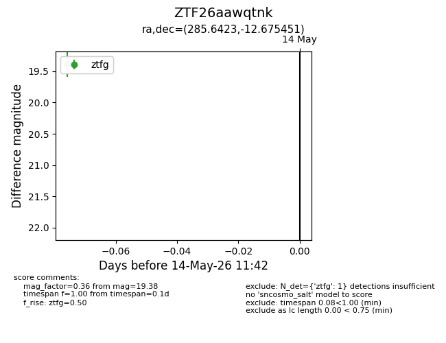
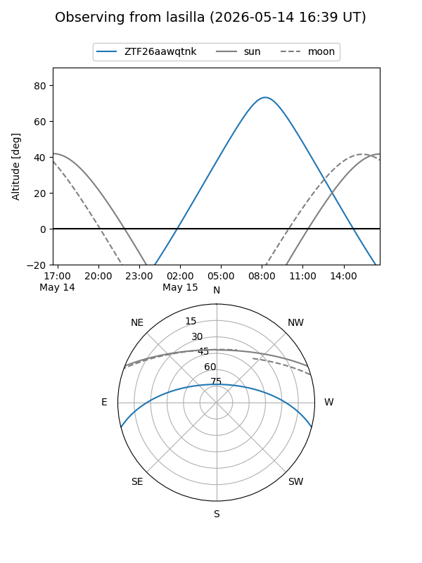
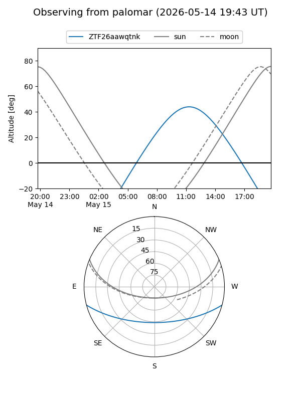

ZTF26aawqtnk
Target ZTF26aawqtnk at 2026-05-14 11:44
Aliases and brokers:
FINK: link
Lasair: link
ALeRCE: link
alt names
ZTF26aawqtnk (ztf,fink_ztf)
Coordinates:
equatorial (ra, dec) = 285.6423,-12.67545
equatorial (HMS+DMS) = 19:02:34.16,-12:40:31.62
galactic (l, b) = (22.8257,-8.17589)
Flags:
Photometry:
last ztfg=19.38
1 ztfg detections
Lightcurve

Visibility


Additional plots